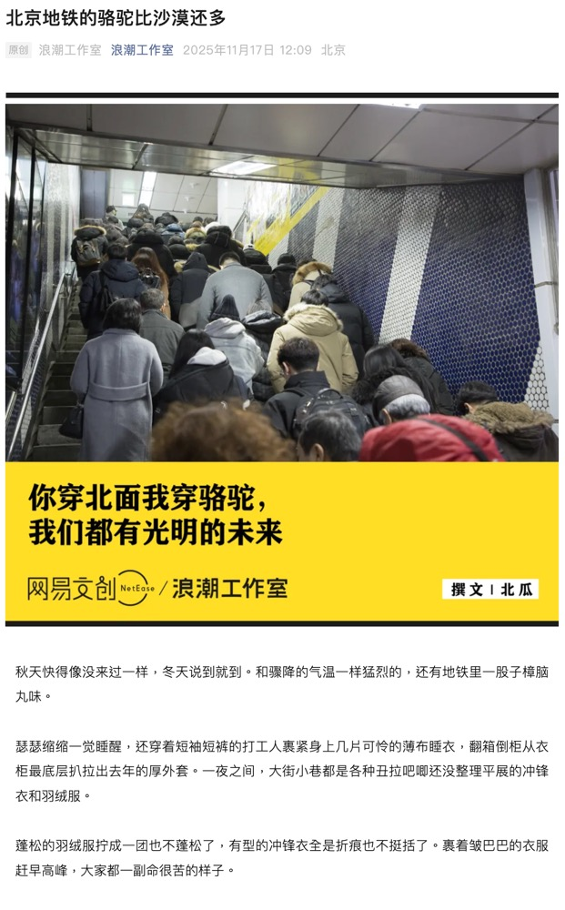
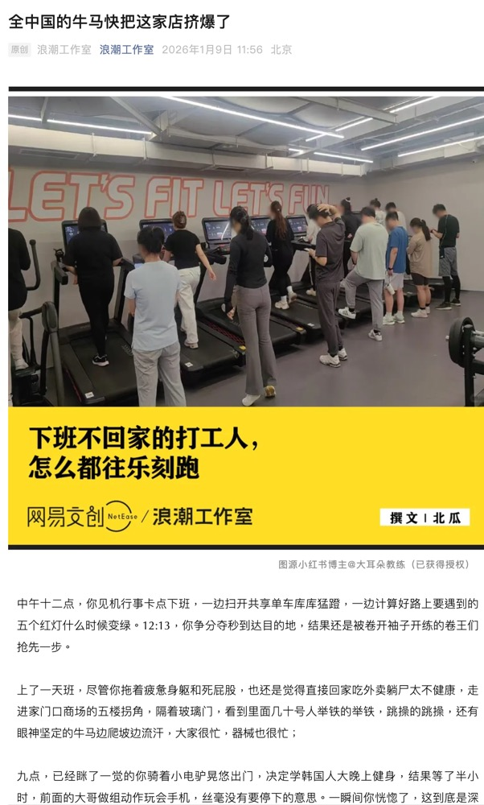
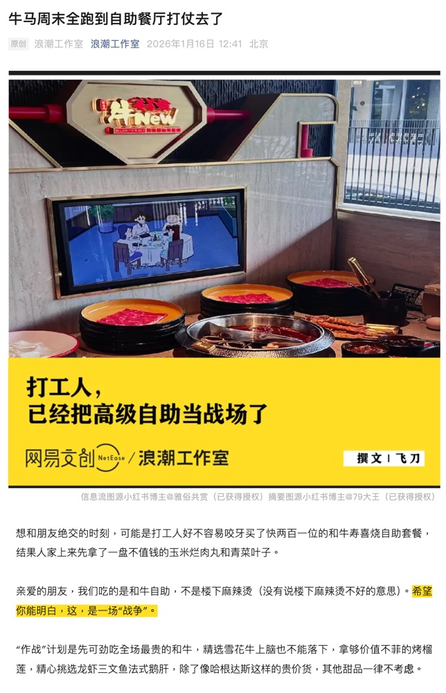

01
01原创创意内容
担任角色：编辑 / 撰稿人
我做的原创文章都有哪些类别？
我的选题来源覆盖全平台内容生态，基于社会议题和情感洞察搜集可行选题，以"我"的思考与情感为起点，但不局限于纯粹的头脑风暴，通过大量的资料调研和逻辑筛选出值得深入的方向。每一篇原创都从"为什么"开始。
人群分析
聚焦特定人群的生存状态与精神切面
《男大学生，正在批量减少》《社恐的中小学生，正在成为孤独的一代》《我发现，30岁真的好爽》……
商业观察
聚焦消费趋势、品牌现象、行业变化，"商业行为和社会情绪结合"的分析方法，直接推动账号风格改革
《北京地铁的骆驼比沙漠还多》《最难倒闭的奶茶店，都火了十几年了》《全网都替刘文祥着急》《费大厨们是怎么占领全国商场的》……
情感洞察
尝试分析当代人的情感状态与模式，提出疑问与思考
《县城相亲顶配，找不到对象》《当初要把猫扔出去的父母，后来怎样了》……
热点人物与电影分析
洞察人物特性，尝试在分析人物和电影的过程中找出一条主线，发现其内核
《单依纯，简直强得可怕》《打败周杰伦的男人，什么来头》《已经烂到没有底线了》（漫威电影分析）……
代表作品
系列创作能力

北京地铁的骆驼比沙漠还多
骆驼冲锋衣爆火，为什么大家都选择它？

全中国的牛马快把这家店挤爆了
一边加班一边健身，乐刻健身房排队现象的背后，隐含着什么样的情绪？

牛马周末全跑到自助餐厅打仗去了
一个"薅"字，就能解释人们在寿喜烧餐厅里吃贵价和牛的心理吗？
02品牌商业策划
担任角色：项目全流程负责人
01
理解品牌诉求
深度沟通品牌调性、传播目标与核心卖点，找到品牌"真正想说的话"与用户"真正想听的话"之间的交集。
02
链接用户需求
基于平台数据与情绪洞察，将品牌表达转化为用户能产生共鸣的内容形态——不是硬广，是"刚好想看到"。
03
内容转化落地
从选题策划到成稿交付，全流程把控内容质量、传播节奏与效果复盘，确保每一步可执行、可追踪。
对接客户类型
项目案例
新消费品牌
某生活方式品牌 × 公众号系列内容策划
从品牌调性出发，策划 6 篇系列图文内容，覆盖产品场景、用户故事与品牌理念三个维度。
互联网平台
某社区平台年度内容专题策划与执行
统筹选题、撰稿、审核全流程，产出 12 篇深度内容，项目周期 3 个月。
文化机构
某文化空间品牌升级内容方案
负责品牌定位梳理、内容策略制定与首批传播物料的策划及撰写。
04个人生活作品
平台：小红书
除了工作内容，我也在小红书持续记录个人生活——拍照、探店、城市漫游、日常随想。
这些内容不服务于客户，只服务于"我还想表达什么"。
城市散步 · 记录日常街角
咖啡与阅读 · 安静的下午
旅行手记 · 陌生城市的温度
探店笔记 · 藏在巷子里的好店
随手拍 · 光影与色彩
生活碎片 · 那些不经意的瞬间